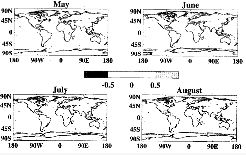
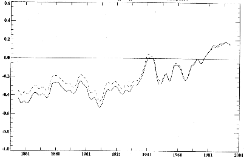

Figure 6b. GISST2.2 monthly sea-ice climatology. Sea-ice concentration shaded in gradations of 0.25. Arctic, July - December.
This article has not been published but permission is given to quote this report by the Directory of the Hadley Centre, UK Met Office, Bracknell, Bershire, RG12 2SY, UK
CLIMATE RESEARCH TECHNICAL NOTE NO. 63
THE 1961-1990 GISST2.2 SEA SURFACE TEMPERATURE AND SEA-ICE CLIMATOLOGY
D. E. Parker, M. Jackson and E. B. Horton
(Hadley Centre for Climate Prediction and Research Meteorological
Office
London Road, Bracknell, Berkshire RG12 2SY)
NOTE: This paper has not been published. Permission to quote from it should be obtained from the Director of the Hadley Centre.
December 1995
ABSTRACT
We describe a new geographically complete climatology of sea surface temperature (SST) and sea-ice for 1961-1990, which was created along with version 2.2 of the Global sea Ice and Sea Surface Temperature data set (GISST2.2, Rayner et al., 1995). The climatology was developed using, as a starting point, a globally complete SST background field. This was created for each calendar month by averaging the relevant blended satellite and in situ SST fields for 1982 onwards contained in GISST1.1. In situ SSTs for each individual month in 1961-1990 were then collated with SSTs derived statistically for sea-ice margin regions from available SST data and the observed sea-ice concentrations. The collated data were then blended with the background field using a method in which the two-dimensional second derivative of the background field was preserved. The resulting individual monthly SSI fields were averaged into a monthly climatology on 10° latitude x longitude resolution. Harmonic synthesis was used to create a pentad SST climatology, which was further resolved to a daily climatology using linear interpolation. The daily SST climatology was used in the quality-control of SST observations during the creation of version 6 of the Meteorological Office Historical Sea Surface Temperature data set, MOHSST6 which in turn was used in the development of GISST2.2. Following improved treatment of sea-ice concentrations and ice-zone SSTs in GISST2.2, we averaged its monthly fields to form the GISST2.2 1961-1990 climatology. The SST component of this was used again to create pentad and daily climatologies. Climatological sea-ice concentrations were placed in a companion file. Comparisons with the older MOHSST4 SST climatology, which was referenced to 1951-1980, show substantial improvements in the Southern Ocean and an improved representation of strong climatological gradients, as well as real worldwide changes consequent on the change of reference period.
1. INTRODUCTION
Reliable base climatologies are essential for the assessment of climatic anomalies and the detection of climatic changes, on both global and regional scales. They are also needed as a reference in the quality-control of observations. In this paper, we describe the development of a new climatology of sea surface temperature (SST). The reference period is 1961-1990, the period of most plentiful data, including satellite-based observations of SST, permitting very worthwhile improvements in data-sparse regions, in comparison with climatologies for 1951-1980, e.g. Bottomley et al. (1990). 1961-1990 is also the new World Meteorological Organization standard reference period, for which land station climatologies have been constructed (Jones, 1994).
In parts of the midlatitude Southern Ocean, especially in the eastern Pacific sector, existing climatologies for 1951-1980, even those based on GISST1.1 (Parker et al., 1995), are substantially biased, by up to 1°C or more (Parker et al., 1994). The evidence for this is the persistence of anomalies (i.e. deviations from climatology) of one sign and of this size in recent decades in data which were referenced to these climatologies. the biases arose because 1951-1980 in situ data were too sparse to permit Bottomley et al. (1990) to base their climatology on them: instead they made substantial use of the climatology of Alexander and Mobley (1976) who had used earlier data and, in the Southern Ocean, a bilinear interpolation. This interpolation was especially prone to error in regions of strong climatological SSI gradient near the oceanic convergence zones. The Laplacian (or Poisson's equation) bias-adjustment scheme (Reynolds, 1988) used by Bottomley et al. (1990) will have reduced the Alexander and Mobley biases somewhat in areas close to locations where 1951-1980 in situ data were sufficient to calculate a climatology, but will have had little effect further south where 'ground truth' was lacking. The GISST1.1 climatology for 1951-1980 had smaller biases than the climatology of Bottomley et al. (1990), because of the interpolation of 50 area in situ anomalies from the Meteorological Office Historical Sea Surface Temperature (MOHSST55) data set into some missing'areas, and because SSTs near ice-edges were modified in a manner consistent with anomalies of ice coverage (see Parker et al., 1995). However, some biases remained because the imperfect Bottomley et al. (1990) climatology was used as a background field in the creation of GISST1.1 (Parker et al., 1995).
2. CONSTRUCTION OF NEW CLIMATOLOGY
We have now created new normals using the 1982-1994 average of GISST1.1 (Parker et al., 1995) as an SST background field. We chose this background field because it includes satellite SST data; the biases of the satellite SSTs relative to in situ data had been reduced by Reynolds' (1988) Laplacian blending technique during the creation of GISST1.1(Parker et al.; 1995). Because of the satellite data, there are few areas in which the Bottomley et al. (1990) SST climatology dominates the new background field.
We first combined worldwide in situ SST data with statistically-based estimates of SSTs in sea-ice zones in each individual month in 1961-1990. The in situ SST data were 1° latitude x longitude monthly 'superobs' calculated by 'winsorising' (a form of trimmed averaging, in this case trimming at the outer quartiles, see Bottomley et al., 1990) 1° latitude x longitude pentad (=5-day) superobs. If there were fewer than 4 pentad superobs, a simple average was used. The pentad superobs had in turn been calculated by winsorising anomalies based on observations quality-controlled against the GISST1.1 1951-1980 climatology as described in Appendix 1. The sea-ice zone SSTs were also on monthly 1° latitude x longitude resolution and had been specified statistically from observed sea-ice concentrations as in Section A2.1 of Appendix 2: statistical estimates were overridden by the in situ superobs wherever these were available.
These SST data were blended with the SST background field for the relevant calendar month, by:
i) conversion to deviations from the background field;
ii) linear interpolation of these deviations;
iii) smoothing of the resulting complete field of SST deviations;
iv) adding back the background field.
Details are given in Appendix 3 where it is shown that the process conserves the two-dimensional second derivative of the background field. It is thus similar to the use of Poisson's equation in interpolation by Bottomley et al. (1990). The result of the blending process was a set of complete 1° area resolution fields of SST for each month from January 1961 to December 1990. These fields were averaged to form a new monthly 1961-1990 SST climatology. This climatology was then used as a background field in a second iteration of stages i) to iv), and the resulting fields were averaged into a further 'GISST2.0' SST climatology. This climatology was then interpolated to pentad resolution using harmonic synthesis (Appendix 4), and further interpolated linearly to give a daily climatology.
The daily SST climatology for 1961-1990 was used to convert individual SST observations to anomalies for quality-control and compositing during the creation of MOHSST6, again using the scheme in Appendix 1. When normals for pentads (eg Jan 1-5, 6-10 etc) are used to calculate SST anomalies, as was done by Bottomley et al. (1990), the annual cycle causes some scatter, especially in transition seasons (Trenberth et al. (1992)). Our new procedure avoids this problem, as recommended by Trenberth et al.
The MOHSST6 data set was the major SST input to GISST2.2 (Rayner et al., 1995). The monthly GISST2.2 SST fields from 1949 to 1981 are based mainly on reconstructions using eigenvectors of SST anomalies with 2° x 2° spatial resolution, with the GISST2.0 1° x l° spatial resolution climatology as a reference. The monthiy GISST2.2 fields for 1982 onwards are based on a blend of in situ and satellite SST anomalies on 2° x 2° spatial resolution, again with the G1SST2.0 1° x 1° spatial resolution climatology as a reference. During the creation of GISST2.2 we developed improvements in the treatment of sea-ice and of sea-ice zone SSTs, as described in Section A2.2 of Appendix 2.
Following these improvements, we averaged the GISST2.2 monthly fields to form the GISST2.2 1961-1990 monthly climatology of SST and sea-ice. From the SST climatology, we derived pentad normals of SST as described in Appendix 4, and daily norrnals by linear interpolation.
The new monthly, pentad and daily SST climatologies have values throughout the ice-zone areas (Appendix 2). A companion file contains the monthly climatological sea-ice concentrations in tenths. The ice indicators are zero wherever GISST2.2 has no ice in a 1° area in the 30-year period, and 10 wherever GISST2.2 has complete ice cover throughout this period. A single occurrence of ice in GISST2.2 resulted in an indicator of 1, and a single occasion of incomplete ice cover in a record of otherwise unbroken ice in GISST2.2 yielded an indicator of 9.
3. ASSESSMENT OF NEW CLIMATOLOGY
Figures la, b show the GISST2.2 SST climatology for January and July; differences from the Bottomley et al. climatology are shown in Figures 1c, d and display changes exceeding 1 °C over the Southern Ocean, as well as smaller but real worldwide differences owing to the change of reference period, e.g. a cooling in the northwest Atlantic (see Parker et al., 1994) and the midlatitude north Pacific (Trenberth and Hurrell, 1994). The improvement in the area 55° - 65° S, 90° - 120° W in the Southern Ocean is demonstrated by Figure 2. MOHSST5 anomalies from the Bottomley et al. (1990) 1951-1980 climatology are positive in almost evely season with data in the reference period, and throughout the historical record. MOHSST6 anomalies relative to both the GlSST 2.0 climatology (Figure 2a) and the GISST2.2 climatology (Figure 2b) are much less biased. They still show more frequent positive than negative SST anomalies in 1961-1990, but this is because there were more missing seasons (plotted as zero) in the earlier part of the reference period, when negative anomalies were more common in the available observations. Anomalies in a reference period are in general likely to have a non-zero average when they are based on intermittent, patchy data, but if virtually all the anomalies are of one sign, then the climatology must be biased. We conclude that the new climatology is the more reliable and will allow a better assessment of climatic variations in the Southern Ocean.
The new climatology resolves sharp gradients of SST better than do our older climatologies. This is particularly evident in the Gulf Stream and Kuroshio regions, and in some coastal upwelling areas. To illustrate this, we compare in Figure 3 the GISST2.0 and GISST2.2 January climatologies with a provisional earlier version in which the input in situ SSTs were derived by adding 5° resolution SST anomalies to the background field, and the blending was carried out by solving Laplace's equation on the sphere, much as was done by Bottomley et al. (1990). The GISST2.0 climatology in particular has stronger gradients in the aforementioned areas than the provisional climatology. Changes between ihe GISST2.0 and GISST2.2 climatologies near the Gulf Stream, in data-sparse seas such as the Caspian, and in summer and autumn in the Arctic (Figure 4), are probably a result of the more explicit use of satellite SST data for 1982-1990 in GISST2.2, and the random exclusion of variance from the SST anomalies by the eigenvector reconstruction for the earlier years of GISST2.2. The main systematic change between the GISST2.0 and GISST2.2 climatologies was a warming of the order of 0.5°C in parts of the Antarctic ice zones as a result of the revised treatment of sea-ice and marginal ice zone sea surface temperatures in GISST2.2 (Figure 4).
Figures 5a to 5c show the GISST2.2 SST climatology for each calendar month. Figures 6a to 6d show the sea-ice climatology.
A new optimum-interpolation-based climatology has been created by Reynolds and Smith (1995), and resolves sharp gradients very well. However, while its reference period is 1950-1979 between about 40°S- and 60°N, it is effectively 1982-1993 at higher latitudes, with sea-ice data limited to this period. So it is not exactly comparable with ours. In addition, Reynolds and Smith (1995) did not develop a scheme for estimating marginal ice zone SSTs from sea-ice concentrations, or include a climatology of sea-ice concentration. Figure 7 illustrates the substantial differences between the Reynolds and Smith (1995) and GISST2.2 climatologies for July in the Atlantic sector of the Arctic.
4. CONCLUSIONS
The GISST2.2 SST climatology is expected to be a much improved basis for the assessment of climatic anomalies and the detection of climatic changes, as well as for quality control. Figures 8a to 8c show smoothed hemispheric and global SST anomalies derived from MOHSST6 relative to the GISST2.2 1961-1990 climatology, and from a version of MOHSST5 relative to the GlSSTl 1951-1980 climatology but with the time series adjusted to have zero mean in 1961-1990. The removal of the cold biases from the climatology for the Southern Ocean has significantly lowered the Southern Hemisphere and global anomalies for the earlier years when coverage of data at high southern latitudes was greater than in recent years (Figure 2 and Bottomley et al., 1990).
We have already used the GISST2.0 SST climatology as preliminary guidance in the development of an improved night marine air temperature climatology and a climatology of air sea temperature difference, both of which will be important in model validation.
ACKNOWLEDGEMENTS
R Hackett contributed computer graphics for this paper.
REFERENCES
Alexander, R.C. and Mobley, R.L.: 1976,'Monthly average sea-surface temperatures and icepack limits on a 1° global grid', Mon. Wea. Rev. 104, 143-148.
Bottomley, M., Folland, C.K., Hsiung, J., Newell, R.E. and Parker, D.E.: 1990, Global Ocean Surface Temperature Atlas (GOSTA). Joint Meteorological Office and Massachusetts Institute of Technology Project. Project supported by US Dept. of Energy, US National Science Foundation and US Office of Naval Research. Publication funded by UK Depts. of the Environment and Energy. HMSO, London. 20 + iv pp. and 313 Plates.
Folland, C.K. and Parker, D.E.: 1995,'Correction of instrumental biases in historical sea surface temperature data', Quart.J.Roy. Meteor.Soc. 121, 319-367.
Folland, G.K., Reynolds, R.W., Gordon, M. and Parker, D.E.: 1993, 'A study of six operational sea surface temperature analyses', J.Clim. 6, 96-113.
Jones, P.D.: 1994, 'Hemispheric surface air temperature variations: a reanalysis and an update to 1993', J.Clim, 7, 1794-1802.
Parker, D.E., Jones, P.D., Folland, C.K. and Bevan, A.: 1994,'lnterdecadal changes of surface temperature since the late nineteenth century', J.Geophys.Res. 99, 14373-14399.
Parker, D.E., Folland, C.K., Bevan, A., Ward, M.N., Jackson, M. and Maskell, K.: 1995,'Marine surface data for analysis of ciimatic fluctuations on interannuai to century time scales', in Martinson, D.G. et al. (eds), Natural Climate Variability on Decade-to-Century Time Scales, National Acad.Press, Washington, DCI in press.
Rayner, N.A., Folland, C.K., Horton, B. and Parker, D.E.: 1995,'A new Global sea Ice and Sea Surface temperature (GISST) data set for 1903-1994'. Presented by C.K. Folland to the Wadati Conference on Global Change and the Polar Climate, Tsukuba, Japan, 7-10 November 1995. Available as Hadley Centre lnternal Note No. 69.
Reynolds, R.W.: 1988,'A real-time global sea surface temperature analysis', J.Clim. 1, 75-86.
Reynolds, R.W.and and Smith, T.M.: 1995,'A high resolution global sea surface temperature climatology', J. Clim., 8, 1571-1583.
Schluessel, P., Emery, W.J., Grassl, H. and Mammen, T.: 1990,'0n the bulk-skin temperature difference and its impact on satellite remote sensing of sea surface temperatures', J.Geophys.Res. 95, 13341-13356.
Trenberth, K.E., Christy, J.R. and Hurrell, J.W.: 1992,'Monitoring global monthly mean surface temperatures', J.Clim. 5, 1405-1423.
Trenberth, K.E.and Hurrell, J.W.: 1994,'Decadal atmosphere-ocean variations in the Pacific', Clim. Dyn. 9, 303-319.
Woodruff, S.D., Slutz, R.J., Jenne, R.L. and Steurer, P.M.: 1987, 'A Comprehensive Ocean Atmosphere Data Set', Bull.Amer.Meteor.Soc. 68, 1239-1250.
FlGURE CAPTIONS
Figure 1. GISST2.2 SST climatology (°C) for 1961-1990; a, January; b, July; c, January difference from Bottomley et al. (1990), with contours every 0.5°C; d, as c but for July.
Figure 2a. Time series of seasonal MOHSST5 anomalies °C, relative to 1951-1980) (dashed) and MOHSST6 anomalies (°C, relative to the 1961-1990 GISST2.0 climatology) (solid) in the area 55° - 65° S, 90°-120° W.
Figure 2b. As Figure 2a but with the MOHSST6 anomalies referenced to the 1961-1990 GISST2.2 climatology.
Figure 3a. GISST2.0 climatology minus a provisional climatology derived using coarser resolution SST anomalies and solving Laplace's equation on the sphere. January. Contours every 0.5°C with zero omitted.
Figure 3b. GISST2.2 climatology minus the provisional climatology derived using coarser resolution SST anomalies and solving Laplace's equation on the sphere. January. Contours every 0.5°C with zero omitted.
Figure 4a. GISST2.2 SST climatology minus GISST2.0 SST climatology. Contours every 0.5°C with zero omitted. January, February, March and April.
Figure 4b. GISST2.2 SST climatology minus GISST2.0 SST climatology. Contours every 0.5°C with zero omitted. May, June, July and August.
Figure 4c. GISST2.2 SST climatology minus GISST2.0 SST climatology. Contours every 0.5°C with zero omitted. September, October, November and December.
Figure 5a. GISST2.2 SST climatology. Contours at -1.8°C and then every 2.5°C from 0°C to 30°C. January, February, March and April.
Figure 5b. GISST2.2 SST climatology. Contours at -1.8°C and then every 2.5°C from 0°C to 30°C. May, June, July and August.
Figure 5c. GISST2.2 SST climatology. Contours at -1.8°C and then every 2.5°C from 0°C to 30°C. September, October, November and December.
Figure 6a. GISST2.2 monthly sea-ice climatology. Sea-ice concentration shaded in gradations of 0.25. Arctic, January through June.
Figure 6b. GISST2.2 monthly sea-ice climatology. Sea-ice concentration shaded in gradations of 0.25. Arctic, July through December.
Figure 6c. GISST2.2 monthly sea-ice climatology. Sea-ice concentration shaded in gradations of 0.25. Antarctic, January through June.
Figure 6d. GISST2.2 monthly sea-ice climatology. Sea-ice concentration shaded in gradations of 0.25. Antarctic, July through December.
Figure 7. Comparison of the Reynolds and Smith (1995) and GSSST2.2 SST and sea-ice climatologies for the Atlantic sector of the Arctic, July. In the Reynolds and Smith climatology (top), sea-ice is shaded black. In the GISST2.2 climatology (bottom) graded shading is used for sea-ice concentration as indicated by the bar.
Figure 8a. Smoothed seasonal SST: anomalies for the Northern Hemisphere: solid, MOHSST6 relative to the GISST2.2 climatology for 1961-1990; dashed, MOHSST5 relative to the GISST1 climatology for 1951-1980, but with the time series adjusted to have zero mean in 1961-1990.
Figure 8b. Smoothed seasonal SST anomalies for the Southern Hemisphere: solid, MOHSST6 relative to the G1SST2.2 climatology for 1961-1990; dashed, MOHSST5 relative to the GISST1 climatology for 1951-1980, but with the time series adjusted to have zero inedn in 1961-1990.
Figure 8c. Smoothed seasonal SST anomalies for the globe: solid, MOHSST6 relative to the GISST2.2 climatology for 1961-1990; dashed, MOHSST5 relative to the GISST1 climatology for 1951-1980, but with the time series adjusted to have zero mean in 1961-1990.
Figure 1. GIST2.2 SST Climatology (°C) for 1961-1990; a,
January; b, July; c, January difference from Bottomley et al. (1990), with
contours every 0.5°C; d, as c but for July.
Figure 2a. Time series of seasonal MOHSST5 anomalies (°C, relative
to 1951-1980) (dashed) and MOHSST6 anomalies (°C, relative to the 1961-1990
GISST2.0 climatology) (solid) in the area 55° - 65°, 90° -
120° W.
Figure 2b. As Figure 2a but with the MOHSST6 anomalies referenced
to the 1961-1990 GISST2.2 climatology.
Figure 3a. GISST2.0 climatology minus a provisional climatology
derived using coarser resolution SST anomalies and solving Laplace's
equation on the sphere. January. Contours every 0.5°C with zero omitted.
Figure 3b. GISST2.2 climatology minus the provisional climatology derived
using coarser resolution SST anomalies and solving Laplace's equation on
the sphere. January. Contours every 0.5°C with zero omitted.
GISST2.2 - GISST2.0 1961-90 Climatology
(Contours every 0.5°C, zero contour omitted)
Figure 4a. GISST2.2 SST climatology minus GISST2.0 SST climatology. Contours
every 0.5°C with zero omitted. January, February, March and April.

Figure 4b. GISST2.2 SST climatology minus GISST2.0 SST climatology.
Contours every 0.5°C with zero omitted. May, June, July and August.
GISST2.2 - GISST2.0 1961 - 90 Climatology
(Contours every 0.5°C, zero contour omitted)
Figure 4c. GISST2.2 SST climatology minus GISST2.0 SST climatology.
Contours every 0.5°C with zero omitte. September, October, November
and December.
GISST2.2 1960 - 90 Climatology
Figure 5a. GISST2.2 climatology. Contours at -1.8°C and then
every 2.5°C from 0°C to 30°C. January, February, March and
April.
Figure 5b. GISST2.2 climatology. Contours at -1.8°C and then
every 2.5°C from 0°C to 30°C. May, June, July, August.
Figure 5c. GISST2.2 climatology. Contours at -1.8°C and then
every 2.5°C from 0°C to 30°C. September, October, November
and December.
Figure 6a. GISST2.2 monthly sea-ice climatology. Sea-ice concentration
shaded in gradations of 0.25. Arctic, January-June.
Figure 6b. GISST2.2 monthly sea-ice climatology. Sea-ice concentration
shaded in gradations of 0.25. Arctic, July - December.
Figure 6c. GISST2.2 monthly sea-ice climatology. Sea-ice concentration
shaded in gradations of 0.25. Antarctic, January - June.
Figure 6d. GISST2.2 monthly sea-ice climatology. Sea-ice concentration
shaded in gradations of 0.25. Antarctic, July - December.
Figure 7. Comparison of the Reynolds and Smith (1995) and GISST2.2
SST and sea-ice climatologies for the Atlantic sector of the Arctic, July.
In the Reynolds and Smith climatology (top), sea-ice is shaded in black.
In the GISST2.2 climatology (bottom) graded shading is used for sea-ice
concentration as indicated by the bar.
Solid: SST amonlay (MOHSST6) (deg C) w.r.t GISST2.2 1961-90. Folland
and Parker (1995) corrections.
Dashed: SST anomaly (MOHSST5) (deg C) w.r.t. 1961-90. Folland
and Parker (1995) corrections.
Period: 1856 - 1994. 12- season binomial smoothing.
Region: Northern Hemisphere.
Figure 8a. Smoothed seasonal SST anomalies for the Northern Hemisphere:
solid, MOHSST6 relative to the GISST2.2 climatology for 1961-1990; dashed,
MOHSST5 relative to the GISST1 climatology for 1951-1980, but with the
time series adjusted to have zero mean in 1961-1990.
Solid: SST amonlay (MOHSST6) (deg C) w.r.t GISST2.2 1961-90. Folland
and Parker (1995) corrections.
Dashed: SST anomaly (MOHSST5) (deg C) w.r.t. 1961-90. Folland
and Parker (1995) corrections.
Period: 1856 - 1994. 12- season binomial smoothing.
Region: Southern Hemisphere.

Figure 8b. Smoothed seasonal SST anomalies for the Southern Hemisphere:
solid, MOHSST6 relative to the GISST2.2 climatology for 1961-1990; dashed,
MOHSST5 relative to the GISST1 climatology for 1951-1980, but with the
time series adjusted to have zero mean in 1961-1990.
Solid: SST amonlay (MOHSST6) (deg C) w.r.t GISST2.2 1961-90. Folland
and Parker (1995) corrections.
Dashed: SST anomaly (MOHSST5) (deg C) w.r.t. 1961-90. Folland
and Parker (1995) corrections.
Period: 1856 - 1994. 12- season binomial smoothing.
Region: Globe.
Figure 8c. Smoothed seasonal SST anomalies for the Southern Hemisphere:
solid, MOHSST6 relative to the GISST2.2 climatology for 1961-1990; dashed,
MOHSST5 relative to the GISST1 climatology for 1951-1980, but with the
time series adjusted to have zero mean in 1961-1990.
APPENDlX 1
Quality control limits for sea surface temperature data
The longitude of the area is increased by |cos(lat)|^-1 to
allow equal areas to be compared.
If the number of observations in the pentad 1 degree area is
1 - 5: n = 4.0
6 - 15: n = 3.5
16 - 100: n = 3.0
> 101: n = 2.5
Formation of l-degree-area pentad mean anomalies
APPENDlX 2
Specification of SST within the ice pack and in marginal ice zones in the GISST2.0 and GISST2.2 climatologies
A2.1 GISST2.0 CLIMATOLOGY
Monthly in situ SST superobs for 1961-1990 in 1° areas with non-zero sea-ice concentration were related statistically to monthly concentric 5° area sea-ice concentrations 1 using quadratic least-squares regressions of the form:
SST = al2 + bl + c (A2.1)
with the constraint that when I = 1.0 (i.e. complete ice cover), SST = -1.8°C.
a) Northern Hemisphere.
We used sea-ice concentration data from a new analysis by J.Walsh (pers. comm.) except for five peripheral regions (Caspian Sea, Sea of Japan, Sea of Okhotsk) where the data were the same as in GISST1.1 (Parker et al., 1995).
For each season (January to March, etc.), separate relationships were developed for overlapping 300 longitude bands 0° - 30°E, 1° - 31°E,.... to avoid discontinuities in SSTs specified using them. Temperatures were then specified in all 1° areas having non-zero sea-ice concentration using the relationship (A2.1) for the longitude band centred on the target 1° area for the appropriate season and the sea-ice concentration in the same 1° areas in the individual month, e.g. January 1949.
b) Southern Hemisphere.
We used the same sea-ice data as in GISST1.1, i.e. an ice/no ice classification, except that the data for 1984-1988 had been in error and were replaced by sea-ice concentrations obtained from NOAA. We did not use Advanced Very High Resolution Radiometer (AVHRR) satellite SSTs, or convert ice-edges into concentration gradients, as was done in the creation of GISST2.2 (Rayner et al., 1995) which was used to create the GISST2.2 climatology (see Section A2.2 below).
Owing to sparsity of in situ SST data near the Antarctic sea-ice, relationships based on Arctic data were used to specify SSTs for 1984-1988. Four relationships were developed, using monthly data irrespective of longitude for January to March, April to June etc. The relationships were applied to the Antarctic sea-ice data for the corresponding season, e.g the January to March Arctic relationship was used in July to September in the Antarctic. Again, temperatures were specified in all 1° areas having non-zero sea-ice concentration, using the sea-ice concentration in the same 1° area.
For 1961-1983 and 1989-1990, 1° areas classified as sea-ice were accorded a temperature of -1.8°C. A possible future improvement is to use relationships of the form of (A2.1) with NOAA sea ice concentrations for the entire period from 1978 (R.Grumbine, pers.comm.), if they are deemed to be homogeneous.
A2.2 GISST2.2 CLIMATOLOGY
During the creation of GISST2.2 we developed improvements in the treatment of sea-ice and of sea-ice zone SSTs, over and above those described in Section A2.1. These improvements are described by Rayner et al. (1995). For the 1961-1990 period:
i) We converted monthly Antarctic ice / no ice boundaries outside 1984-1988 to concentration gradients. Using GISST1.1 ice edge positions, 1° x 1° areas designated as purely sea-ice were assigned an initial concentration of 10/10: sea boxes were initially assigned 0/10. Then, for each 1° x 1° area, the average was calculated of the sea-ice concentration assigned to it and those of the surrounding 8 1° x 1° areas. This gave smooth gradients of sea-ice concentration, with concentrations of 5/10 at the GISST1.1 ice-edge. These concentrations were then used to create the SST values in the marginal ice zones.
ii) We used monthly Advanced Very High Resolution Radiometer (AVHRR) satellite SSTs for 1982-1994, along with observed sea-ice concentrations for 1984-1988 and concentrations derived as in i) otherwise, to develop the seasonal regressions for the Antarctic. The regressions were developed for the Antarctic as a whole. They were applied in the same season for which they were derived.
APPENDlX 3
Filling and smoothing the individual monthly temperature fields.
A3.1 GENERAL PROCEDURE FOR FILLING AND SMOOTHING
i) 1° areas at the edge of the Antarctic land mass were set to -1.8°C in the background field to ensure that anomalies could be interpolated southwards whenever there was no sea-ice by which to ascribe a temperature (Appendix 2) at the southern edge of the analysis.
ii) The background field was extended over land as described in Section A3.3 below. This was not strictly necessary, since it was the anomalies which were to undergo global interpolation (see iv) below). However, global fields of actual 'SST' were found to be useful for some checking purposes, and e.g. for contour plotting near islands and complex coastlines.
iii) The collated 1° area monthly SSTs (Section 2 of main text) were converted to anomalies relative to the background field.
iv) Missing 1° area anomalies were then filled by linear interpolation of the collated anomalies. The interpolation was done in four directions: and the results from the four directions averaged.
v) The now complete field of anomalies was smoothed twice, each time by replacing each value by the mean of its 8 neighbours as input to the smoothing step.
vi) The extended background field was added to the smoothed anomaly field, yielding a global field of SSTs.
The basic procedure of linearly interpolating the SST anomalies, and then adding the background field to the result, preserves the second derivative of the background field in the final analysis, as shown in Section A3.2 below.
A3.2 Proof that linear interpolation of observed anomalies is equivalent to preserving the second derivative of the background field.
Let 'normal' or background field temperatures at linearly adjacent positions i, i+l,... be:
Ni Ni+1 Ni+2 Ni+3 .....
First differences are then:
(Ni-Ni+1) (Ni+1-Ni+2) (Ni+2-Ni+3) .....
and second differences are:
(Ni-Ni+1)-(Ni+1-Ni+2) (Ni+1-Ni+2)-(Ni+2-Ni+3)
and second differences are:
so that the second difference at location i+l is:
Ni - 2Ni+1 + Ni+2
For actual temperatures ('normals' or background field plus anomalies):
Ni+i Ni+1+i+1 Ni+2+i+2 .....
First differences are:
(Ni+i) - (Ni+1+i+1) (Ni+1+i+1) - (Ni+2+i+2) .....
Second differences are:
(Ni+i) - (Ni+1+i+1) - [(Ni+1+i+1) - (Ni+2+i+2)]
So the second difference at location i+l is:
Ni - 2Ni+1+i+1 + Ni+2 + i - 2i+1 + i+2
If the second difference of the actual temperature at location i+l is constrained to equal the second difference of the 'normal' or background field at the same location:
Ni - 2Ni+1 + Ni+2 = Ni - 2Ni+1+i+1 + Ni+2 + i - 2i+1 + i+2
so that
i+1 = (i + i+2)/2
So, to map the second derivative of the 'normal' or background field onto the actual temperature field, the temperature anomaly should be the mean of the adjacent anomalies. In other words, linear interpolation should be used.
A3.3 Extension of the background field over land and other missing areas.
1° areas without values were filled with interpolated values. There were 5 steps:
i) All 1° areas without a background value and adjacent to at least one 1° area with a value were allocated the mean of the adjacent (up to 8) 1°0 area background values.
ii) Step i) was repeated.
iii) Rows of 1° areas still without background values were assigned values by east-west linear interpolation.
iv) Columns of 1° areas without background values after step ii) were assigned values by northsouth linear interpolation.
v) The results of interpolation in steps iii) and iv) were averaged and the results used to fill the array where steps i) and ii) had not supplied background values.
APPENDlX 4
Harmonic synthesis of monthly climatology.
The monthly climatological SSTs (Tm m=1,12) for each 1° latitude x longitude area were subjected to a harmonic analysis which yielded the annual mean value and the coefficients of 5 pairs of sine and cosine curves of period 1, 1/2, 1/3, 1/4 and 1/5 year:
(A4.1)
where T, is the mean of the 12 monthly values
t = time in months from 1 January. Note that t= m-0.5 because the T, are assumed to apply at mid-month.
(A4.2)
(A4.3)
In the expressions for a, and b, the summations are divided by 6, not 12, because -1 cos2 d and , -1 sin2 d, which effectively occur when (A4.2) and (A4.3) are substituted into (A4,1), are equal to 0.5.
The coefficients, without spatial smoothing, were then used to reconstruct climatological SSTs T, for each calendar pentad, using:
(A4.4) 
The dates of calendar Pentads were as defined by Bottomley et al. (1990). Synthesised values <-1.80C were set to -1.80C.
CLIMATE RESEARCH TECHNICAL NOTES
| CRTN 1 | Oct 1990 | Estimates of the sensitivity of climate to vegetation changes using
the Penman-Monteith equation. P R Rowntree |
| CRTN 2 | Oct 1990 | An ocean general circulation model of the Indian Ocean for hindcasting
studies. D J Carrington |
| CRTN 3 | Oct 1990 | Simulation of the tropical diurnal cycle in a climate model. D P Rowell |
| CRTN 4 | Oct 1990 | CRTN 4 Oct 1990 Low frequency variability of the oceans. C K Folland, A Colman, D E Parker and A Bevan |
| CRTN 5 | Dec 1990 | A comparison of ll-level General Circulation Model Simulations with
observations in the East Sahel. K Maskell |
| CRTN 6 | Dec 1990 | Climate Change Prediction. J F B Mitchell and Qing-cun Zeng |
| CRTN 7 | Jan 1991 | Deforestation of Amazonia - modelling the effects of albedo change.
M F Mylne and P R Rowntree |
| CRTN 8 | Jan 1991 | The role of observations in climate prediction and research. D J Carson |
| CRTN 9 | Mar 1991 | The greenhouse effect and its likely consequences for climate change.
D J Carson |
| CRTN 10 | Apr 1991 | Use of wind stresses from operational N.W.P. models to force an O.G.C.M.
of the Indian Ocean. D J Carrington |
| CRTN 11 | Jun 1991 | A new daily Central England Temperature series, 1772-1991. D E Parker, T P Legg and C K Folland |
| CRTN 12 | Jul 1991 | Causes and predictability of Sahel rainfall variability. D P Rowell, C K Folland, K Maskell, J A Owen, M N Ward |
| CRTN 13 | Jul 1991 | Modelling changes in climate due to enhanced C02, the role of atmospheric
dynamics, cloud and moisture. C A Senior, J F B Mitchell, H Le Treut and Z-X Li |
| CRTN 14 | Sep 1991 | Sea temperature bucket models used to correct historical SST data in
the Meteorological Office. C K Folland |
| CRTN 15 | Aug 1991 | Modelling climate change, and some potential effects on agriculture
in the U.H. P R Rowntree, B A Callander and J Cochrane |
| CRTN 16 | Aug 1991 | The Boreal Forests and Climate G Thomas and P R Rowntree |
| CRTN 17 | Aug 1991 | Development of a Stratosphere-Troposphere Data Assimilation System.
R Swinbank |
| CRTN 18 | Sep 1991 | A study of asynchronous coupling using a simple climate model. M K Davey |
| CRTN 19 | Sep 1991 | The Oceanic Carbon Cycle N K Taylor |
| CRTN 20 | Nov 1991 | Worldwide ocean-atmosphere surface fields in Sahel wet and dry years
using provisionally corrected surface wind data. MN Ward |
| CRTN 21 | Dec 1991 | Coupled tropical ocean global atmosphere models at the UKMO. M K Davey, C Gordon, S Ineson and S Lawrence |
| CRTN 22 | Dec 1991 | Empirical parameterisation of tropical ocean-atmosphere coupling. M Allen, M K Davey, D L T Anderson and P D Killworth |
| CRTN 23 | Feb 1992 | The temporal evolution of Equatorial Currents in the Indian Ocean D L T Anderson, D J Carrington, R A Corry and C Goraon |
| CRTN 24 | Feb 1992 | Stratospheric analyses provided by the U.K. Meteorological Office M J Bailey, A O'Neill and V D Pope |
| CRTN 25 | Feb 1992 | Modelling interannual variability in the Indian Ocean using momentum
fluxes from the UKMO and ECMWF operational weather analyses. D L T Anderson and D J Carrington |
| CRTN 26 | Mar 1992 | A GCM simulation of the impact of Amazonian deforestation on climate
using an improved canopy representation J Lean and P R Rowntree |
| CRTN 27 | Mar 1992 | The parameterization of rainfall interception in GCMs A J Dolman and D Gregory |
| CRTN 28 | Jun 1992 | Development of worldwide marine data eigenvectors since 1985 A W Colman |
| CRTN 29 | Jun 1992 | A tropical ocean model with reduced physics MR Davey |
| CRTN 30 | Jun 1992 | International Temperature Workshop, Boulder, Colorado, USA, 16 January
1992 Edited by D E Parker |
| CRTN 31 | Jul 1992 | Simulation of clear-sky outgoing longwave radiation over the oceans
using operational analyses A Slingo and M J Webb |
| CRTN 32 | Sep 1992 | A prediction of the transient response of climate JM Murphy |
| CRTN 33 | Nov 1992 | LEPS scores for assessing climate model simulations and long-range
forecasts. C K Folland |
| CRTN 34 | Jan 1993 | Stratospheric Data Assimilation System Guide Editor: R Swinbank |
| CRTN 35 | Mar 1993 | A Stratosphere-Troposphere Data Assimilation System R Swinbank and A O'Neill |
| CRTN 36 | Mar 1993 | Validation of hydrological schemes for climate models against catchment
data. P R Rowntree and J Lean |
| CRTN 37 | Apr 1993 | Modelling of palaeoclimates: Examples from the recent past J F B Mitchell |
| CRTN 38 | May 1993 | A simulation of seasonality in ENSO forecast skill M K Davey, D L T Anderson and S Lawrence |
| CRTN 39 | Jul 1993 | ENSO Prediction experiments using a simple ocean-atmosphere model D-H Wu, D L T Anderson and M K Davey |
| CRTN 40 | Sep 1993 | Diagnosis of dynamic sea-surface and sea level changes from the Cox
ocean model JM Gregory |
| CRTN 41 | Sep 1993 | Seasonal variations of the clear-sky greenhouse effect: the role of
changes in atmospheric temperatures and humidities M J Webb, A Slingo and G L Stephens |
| CRTN 42 | Nov 1993 | Sea-level changes under increasing atmospheric C02 in a transient coupled
ocean atmosphere GCM experiment. JM Gregory |
| CRTN 43 | Dec 1993 | Global and regional patterns of climate change: recent predictions
for the Arctic P R Rowntree |
| CRTN 44 | Feb 1994 | The effect of changing horizontal diffusion in the atmospheric version
of the unified climate model C D Hall and R A Stratton |
| CRTN 45 | Mar 1994 | Simulation of El-Niño/Southern Oscillation like variability
in a global AOGCM and its response to CO, increase. S F B Tett, CRTN 46 Apr 1994 Global data required for monitoring climate change. |
| CRTN 46 | Apr 1994 | Global data required for monitoring climate change. D E Parker and C K Folland |
| CRTN 47 | May 1994 | Seasonal uptake of anthropogenic COz in an ocean general circulation
model. N K Taylor |
| CRTN 48 | Jun 1994 | A tropic-wide oscillation of boreal summer rainfall and patterns of
sea-surface temperature. M N Ward, K Maskell, C K Folland, D P Rowell and R Washington |
| CRTN 49 | Jun 1994 | Simulation of the tropical Pacific using a simplified ocean model M A Balmaseda, D L T Anderson and M K Davey |
| CRTN 50 | Sep 1994 | Simulation of global mean temperature using a box-diffusion climate
model P R Rowntree |
| CRTN 51 | Sep 1994 | Seasonal dependence of ENSO prediction skill M A Balmaseda, M K Davey and D L T Anderson |
| CRTN 52 | Nov 1994 | Simulation of the Indian Monsoon and Tropical Intraseasonal Variability
by a General Circulation Model P M Inness and D Gregory |
| CRTN 53 | Mar 1995 | A comparison of modelled surface fluxes with climatological estimates.
C Gordon and D K Wright |
| CRTN 54 | Mar 1995 | The representation of moist convection in atmospheric models. D Gregory |
| CRTN 55 | Mar 1995 | A consistent treatment of the evaporation of rain and snow for use
in large-scale models D Gregory |
| CRTN 56 | Apr 1995 | Workshop on simulations of the Climate of the Twentieth Century using
GISST, 28-30 November 1994, Hadley Centre, Bracknell, UK Edited by C K Folland and D P Rowell |
| CRTN 57 | May 1995 | Enhanced shortwave cloud radiative forcing due to anthropogenic aerosols.
S E Swartz and A Slingo |
| CRTN 58 | May 1995 | The simulation of the tropical oceans in models of different horizontal
resolution. C Gordon, D K Wright and C M Roberts |
| CRTN 59 | Sep 1995 | The water budget of middle latitude continental regicns - a modelling
and observational study P R Rowntree |
| CRTN 60 | Sep 1995 | Intraseasonal variability of the Indian summer monsoon simulated by
the Hadley Centre climate model
K Ashok, D Gregory and P M Inness |
| CRTN 61 | Sep 1995 | Climate simulations with the Unified Model: AMIP runs C D Hall, R A Stratton and M L Gallani |
| CRTN 62 | Nov 1995 | Validation of surface parameters over the oceans in climate simulations
with the unified model. C D Hall |
| CRTN 63 | Dec 1995 | The GISST2.2 sea surface temperature and sea ice climatology D E Parker, M Jackson and E B Horton |